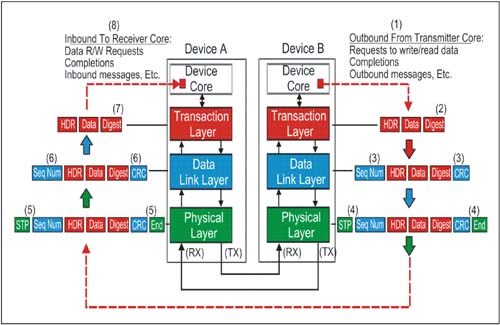
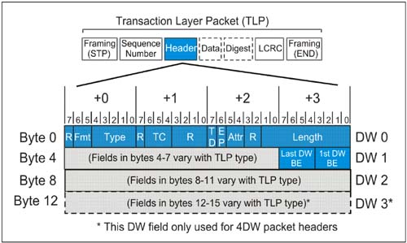
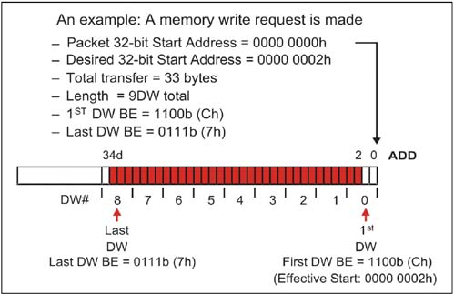
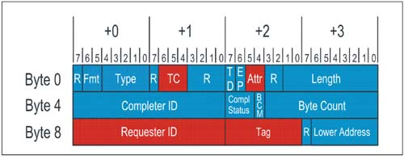
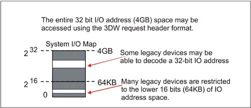
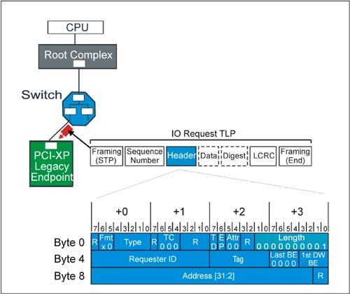
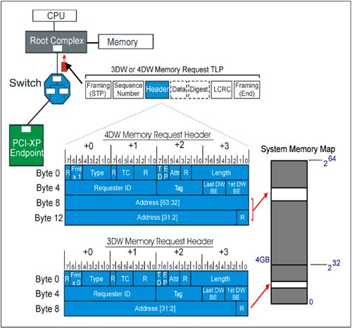
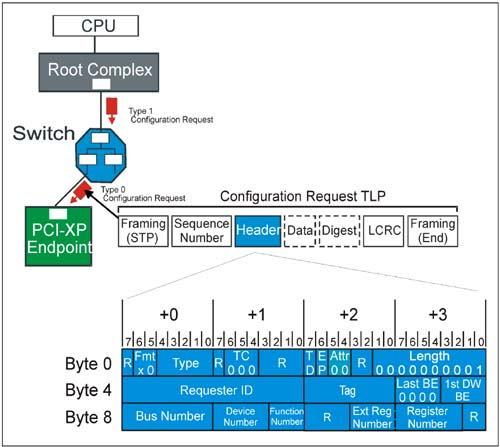
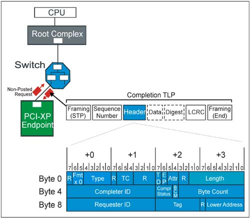
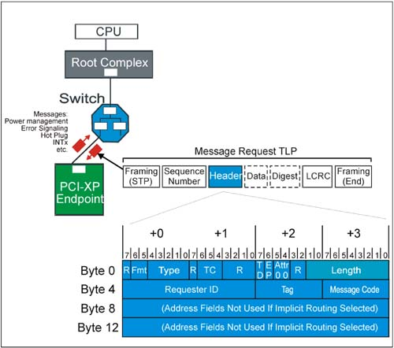

Transaction Layer Packets
In PCI Express terminology, high-level transactions
originate at the device core of the transmitting device and terminate at
the core of the receiving device. The Transaction Layer is the starting
point in the assembly of outbound Transaction Layer Packets (TLPs), and
the end point for disassembly of inbound TLPs at the receiver. Along
the way, the Data Link Layer and Physical Layer of each device
contribute to the packet assembly and disassembly as described below.
TLPs Are Assembled And Disassembled
Figure 4-2
on page 158 depicts the general flow of TLP assembly at the transmit
side of a link and disassembly at the receiver. The key stages in
Transaction Layer Packet protocol are listed below. The numbers
correspond to those in Figure 4-2.
Device
B's core passes a request for service to the PCI Express hardware
interface. How this done is not covered by the PCI Express
Specification, and is device-specific. General information contained in
the request would include:
- The PCI Express command to be performed - Start address or ID of target (if address routing or ID routing are used) - Transaction type (memory read or write, configuration cycle, etc.) - Data payload size (and the data to send, if any) - Virtual Channel/Traffic class information - Attributes of the transfer: No Snoop bit set?, Relaxed Ordering set?, etc.
The
Transaction Layer builds the TLP header, data payload, and digest based
on the request from the core. Before sending a TLP to the Data Link
Layer, flow control credits and ordering rules must be applied. When
the TLP is received at the Data Link Layer, a Sequence Number is
assigned and a Link CRC is calculated for the TLP (includes Sequence
Number). The TLP is then passed on to the Physical Layer. At
the Physical Layer, byte striping, scrambling, encoding, and
serialization are performed. STP and END control (K) characters are
appended to the packet. The packet is sent out on the transmit side of
the link. At
the Physical Layer receiver of Device A, de-serialization, framing
symbol check, decoding, and byte un-striping are performed. Note that at
the Physical Layer, the first level or error checking is performed (on
the control codes). The
Data Link Layer of the receiver calculates CRC and checks it against
the received value. It also checks the Sequence Number of the TLP for
violations. If there are no errors, it passes the TLP up to the
Transaction Layer of the receiver. The information is decoded and passed
to the core of Device A. The Data Link Layer of the receiver will also
notify the transmitter of the success or failure in processing the TLP
by sending an Ack or Nak DLLP to the transmitter. In the event of a Nak
(No Acknowledge), the transmitter will re-send all TLPs in its Retry
Buffer.

Device Core Requests Access to Four Spaces
Transactions are carried out between PCI Express
requesters and completers, using four separate address spaces: Memory,
IO, Configuration, and Message. (See Table 4-1.)
Table 4-1. PCI Express Address Space And Transaction Types|
Memory | Read, Write | Transfer data to or from a location in the system memory map. The protocol also supports a locked memory read transaction. | IO | Read, Write | Transfer data to or from a location in the system IO map. PCI Express IO address assignment to legacy devices.
IO addressing is not permitted for Native PCI Express devices. | Configuration | Read, Write | Transfer
data to or from a location in the configuration space of a PCI Express
device. As in PCI, configuration is used to discover device
capabilities, program plug-and-play features, and check status using the
4KB PCI Express configuration space. | Message | Baseline, Vendor-specific | Provides
in-band messaging and event reporting (without consuming memory or IO
address resources). These are handled the same as posted write
transactions. |
TLP Transaction Variants Defined
In accessing the four address spaces, PCI Express Transaction Layer Packets (TLPs) carry a header field, called the Type field, which encodes the specific command variant to be used. Table 4-2 on page 160 summarizes the allowed transactions:
Table 4-2. TLP Header Type Field Defines Transaction Variant|
Memory Read Request | (MRd) | Memory Read Lock Request | (MRdLk) | Memory Write Request | (MWr) | IO Read Request | (IORd) | IO Write Request | (IOWr) | Config Type 0 Read Request | (CfgRd0) | Config Type 0 Write Request | (CfgWr0) | Config Type 1 Read Request | (CfgRd1) | Config Type 1 Write Request | (CfgWr1) | Message Request | (Msg) | Message Request W/Data | (MsgD) | Completion | (Cpl) | Completion W/Data | (CplD) | Completion-Locked | (CplLk) | Completion W/Data | (CplDLk) |
TLP Structure
The basic usage of each component of a Transaction Layer Packet is defined in Table 4-3 on page 161.
Table 4-3. TLP Header Type Field Defines Transaction Variant|
Header | Transaction Layer | 3DW or 4DW (12 or 16 bytes) in size. Format varies with type, but Header defines transaction parameters:
Transaction type Intended recipient address, ID, etc. Transfer size (if any), Byte Enables Ordering attribute Cache coherency attribute Traffic Class
| Data | Transaction Layer | Optional
field. 0-1024 DW Payload, which may be further qualified with Byte
Enables to get byte address and byte transfer size resolution. | Digest | Transaction Layer | Optional field. If present, always 1 DW in size. Used for end-to-end CRC (ECRC) and data poisoning. |
Generic TLP Header Format
Figure 4-3
on page 162 illustrates the format and contents of a generic TLP 3DW
header. In this section, fields common to nearly all transactions are
summarized. In later sections, header format differences associated with
the specific transaction types are covered.

Generic Header Field Summary
Table 4-4 on page 163 summarizes the size and use of each of the generic TLP header fields. Note that fields marked "R" in Figure 4-3 on page 162 are reserved and should be set = 0.
Table 4-4. Generic Header Field Summary|
Length [9:0] | Byte 3 Bit 7:0
Byte 2 Bit 1:0 | TLP data payload transfer size, in DW. Maximum transfer size is 10 bits, 210 = 1024 DW (4KB). Encoding:
00 0000 0001b = 1DW
00 0000 0010b = 2DW
.
.
11 1111 1111b = 1023 DW
00 0000 0000b = 1024 DW | Attr (Attributes) | Byte 2 Bit 5:4 | Bit 5 = Relaxed ordering.
When set = 1, PCI-X relaxed ordering is enabled for this TLP. If set = 0, then strict PCI ordering is used.
Bit 4 = No Snoop.
When set = 1, requester is indicating that no host
cache coherency issues exist with respect to this TLP. System hardware
is not required to cause processor cache snoop for coherency. When set =
0, PCI -type cache snoop protection is required. | EP (Poisoned Data) | Byte 2 Bit 6 | If
set = 1, the data accompanying this data should be considered invalid
although the transaction is being allowed to complete normally. | TD (TLP Digest Field Present) | Byte 2 Bit 7 | If set = 1, the optional 1 DW TLP Digest field is included with this TLP that contains an ECRC value. Some rules:
Presence of the Digest field must be checked by all receivers (using this bit).
A TLP with TD = 1, but no Digest field is handled as a Malformed TLP. If a device supports checking ECRC and TD=1, it must perform the ECRC check. If a device does not support checking ECRC (optional) at the ultimate destination, the device must ignore the digest.
| TC (Traffic Class) | Byte 1 Bit 6:4 | These
three bits are used to encode the traffic class to be applied to this
TLP and to the completion associated with it (if any).
000b = Traffic Class 0 (Default)
.
.
111b = Traffic Class 7
TC 0 is the default class, and TC 1-7 are used in providing differentiated services. See "Traffic Classes and Virtual Channels" on page 256 for additional information. | Type[4:0] | Byte 0 Bit 4:0 | These
5 bits encode the transaction variant used with this TLP. The Type
field is used with Fmt [1:0] field to specify transaction type, header
size, and whether data payload is present. See below for additional
information of Type/Fmt encoding for each transaction type. | Fmt[1:0] Format | Byte 0 Bit 6:5 | These two bits encode information about header size and whether a data payload will be part of the TLP:
00b 3DW header, no data
01b 4DW header, no data
10b 3DW header, with data
11b 4DW header, with data
See below for additional information of Type/Fmt encoding for each transaction type. | First DW Byte Enables | Byte 7 Bit 3:0 | These four high-true bits map one-to-one to the bytes within the first double word of payload.
Bit 3 = 1: Byte 3 in first DW is valid; otherwise not
Bit 2 = 1: Byte 2 in first DW is valid; otherwise not
Bit 1 = 1: Byte 1 in first DW is valid; otherwise not
Bit 9 = 1: Byte 0 in first DW is valid; otherwise not
See below for details on Byte Enable use. | Last DW Byte Enables | Byte 7 Bit 7:4 | These four high-true bits map one-to-one to the bytes within the first double word of payload.
Bit 3 = 1: Byte 3 in last DW is valid; otherwise not
Bit 2 = 1: Byte 2 in last DW is valid; otherwise not
Bit 1 = 1: Byte 1 in last DW is valid; otherwise not
Bit 9 = 1: Byte 0 in last DW is valid; otherwise not
See below for details on Byte Enable use. |
Header Type/Format Field Encodings
Table 4-5 on page 165 summarizes the encodings used in TLP header Type and Format (Fmt) fields.
Table 4-5. TLP Header Type and Format Field Encodings|
Memory Read Request (MRd) | 00 = 3DW, no data
01 = 4DW, no data | 0 0000 | Memory Read Lock Request (MRdLk) | 00 = 3DW, no data
01 = 4DW, no data | 0 0001 | Memory Write Request (MWr) | 10 = 3DW, w/ data
11 = 4DW, w/ data | 0 0000 | IO Read Request (IORd) | 00 = 3DW, no data | 00010 | IO Write Request (IOWr) | 10 = 3DW, w/ data | 0 0010 | Config Type 0 Read Request (CfgRd0) | 00 = 3DW, no data | 0 0100 | Config Type 0 Write Request (CfgWr0) | 10 = 3DW, w/ data | 0 0100 | Config Type 1 Read Request (CfgRd1) | 00 = 3DW, no data | 0 0101 | Config Type 1 Write Request (CfgWr1) | 10 = 3DW, w/ data | 0 0101 | Message Request (Msg) | 01 = 4DW, no data | 1 0 rrr* (for rrr, see routing subfield) | Message Request W/Data (MsgD) | 11 = 4DW, w/ data | 1 0rrr* (for rrr, see routing subfield) | Completion (Cpl) | 00 = 3DW, no data | 0 1010 | Completion W/Data (CplD) | 10 = 3DW, w/ data | 0 1010 | Completion-Locked (CplLk) | 00 = 3DW, no data | 0 1011 | Completion W/Data (CplDLk) | 10 = 3DW, w/ data | 0 1011 |
The Digest and ECRC Field
The digest field and End-to-End CRC (ECRC) is
optional as is a device's ability to generate and check ECRC. If
supported and enabled by software, devices must calculate and apply ECRC
for all TLPs that the device originates. Also, devices that support
ECRC checking must also support Advanced Error Reporting.
ECRC Generation and Checking
This book does not detail the algorithm and process
of calculating ECRC, but is defined within the specification. ECRC
covers all fields that do not change as the TLP is forwarded across the
fabric. The ECRC includes all invariant fields of the TLP header and the
data payload, if present. All variant fields are set to 1 for
calculating the ECRC, include:
Bit 0 of the Type field is variant �
this bit changes when the transaction type is altered for a packet. For
example, a configuration transaction being forwarded to a remote link
(across one or more switches) begins as a type 1 configuration
transaction. When the transaction reaches the destination link, it is
converted to a type 0 configuration transaction by changing bit 0 of the
type field.
Error/Poisoned (EP) bit �
this bit can be set as a TLP traverses the fabric in the event that the
data field associated with the packet has been corrupted. This is also
referred to as error forwarding.
Who Can Check ECRC?
The ECRC check is intended for the device that is the
ultimate receipient of the TLP. Link CRC checking verifies that a TLP
traverses a given link before being forwarded to the next link, but ECRC
is intended to verify that the packet send has not been altered in its
journey between the Requester and Completer. Switches in the path must
maintain the integrity of the TD bit because corruption of TD will cause
an error at the ultimate target device.
The specification makes two statements regarding a Switch's role in ECRC checking:
A switch that supports ECRC checking performs
this check on TLPs destined to a location within the Switch itself. "On
all other TLPs a Switch must preserve the ECRC (forward it untouched)
as an integral part of the TLP." "Note
that a Switch may perform ECRC checking on TLPs passing through the
Switch. ECRC Errors detected by the Switch are reported in the same way
any other device would report them, but do not alter the TLPs passage
through the Switch."
These statements may appear to contradict each other.
However, the first statement does not explicitly state that an ECRC
check cannot be made in the process of forwarding the TLP untouched. The
second statement clarifies that it is possible for switches, as well as
the ultimate target device, to check and report ECRC.
Using Byte Enables
As in the PCI protocol, PCI Express requires a
mechanism for reconciling its DW addressing and data transfers with the
need, at times, for byte resolution in transfer sizes and transaction
start/end addresses. To achieve byte resolution, PCI Express makes use
of the two Byte Enable fields introduced earlier in Figure 4-3 on page 162 and in Table 4-4 on page 163.
The First DW Byte Enable field and the Last DW Byte
Enable fields allow the requester to qualify the bytes of interest
within the first and last double words transferred; this has the effect
of allowing smaller transfers than a full double word and offsetting the
start and end addresses from DW boundaries.
Byte Enable Rules
Byte
enable bits are high true. A value of "0" indicates the corresponding
byte in the data payload should not be written by the completer. A value
of "1", indicates it should. If the valid data transferred is all within a single aligned double word, the Last DW Byte enable field must be = 0000b. If the header Length field indicates a transfer is more than 1DW, the First DW Byte Enable must have at least one bit enabled. If
the Length field indicates a transfer of 3DW or more, then neither the
First DW Byte Enable field or the Last DW Byte Enable field may have
discontinuous byte enable bits set. In these cases, the Byte Enable
fields are only being used to offset the effective start address of a
burst transaction. Discontinuous byte enable bit patterns in the First DW Byte enable field are allowed if the transfer is 1DW. Discontinuous
byte enable bit patterns in both the First and Second DW Byte enable
fields are allowed only if the transfer is Quadword aligned (2DWs). A write request with a transfer length of 1DW and no byte enables set is legal, but has no effect on the completer. If
a read request of 1 DW is done with no byte enable bits set, the
completer returns a 1DW data payload of undefined data. This may be used
as a Flush mechanism. Because of ordering rules, a flush may be used to
force all previously posted writes to memory before the completion is
returned.
An example of byte enable use in this case is illustrated in Figure 4-4
on page 168. Note that the transfer length must extend from the first
DW with any valid byte enabled to the last DW with any valid bytes
enabled. Because the transfer is more than 2DW, the byte enables may
only be used to specify the start address location (2d) and end address
location (34d) of the transfer.

Transaction Descriptor Fields
As transactions move between requester and completer,
it is important to uniquely identify a transaction, since many split
transactions may be pending at any instant. To this end, the
specification defines several important header fields that when used
together form a unique Transaction Descriptor as illustrated in Figure 4-5.

While the Transaction Descriptor fields are not in
adjacent header locations, collectively they describe key transaction
attributes, including:
Transaction ID
This is comprised of the Bus, Device, and Function Number of the TLP requester AND the Tag field of the TLP.
Traffic Class
Traffic Class (TC 0 -7) is inserted in the TLP by the
requester, and travels unmodified through the topology to the
completer. At every link, Traffic Class is mapped to one of the
available virtual channels.
Transaction Attributes
These consist of the Relaxed Ordering and No Snoop
bits. These are also set by the requester and travel with the packet to
the completer.
Additional Rules For TLPs With Data Payloads
The following rules apply when a TLP includes a data payload.
The Length field refers to data payload only; the Digest field (if present) is not included in the Length. The first byte of data in the payload (immediately after the header) is always associated with the lowest (start) address. The
Length field always represents an integral number of doublewords (DW)
transferred. Partial doublewords are qualified using First and Last Byte
Enable fields. The
PCI Express specification states that when multiple transactions are
returned by a completer in response to a single memory request, that
each intermediate transaction must end on naturally-aligned 64 and 128
byte address boundaries for a root complex (this is termed the Read
Completion Boundary, or RCB). All other devices must break such
transactions at naturally-aligned 128 byte boundaries. This behavior
promotes system performance related to cache lines. The Length field is reserved when sending message TLPs using the transaction Msg. The Length field is valid when sending the message with data variant MsgD. PCI
Express supports load tuning of links. This means that the data payload
of a TLP must not exceed the current value in the Max_Payload_Size
field of the Device Control Register. Only write transactions have data
payloads, so this restriction does not apply to reads. A receiver is
required to check for violations of the Max_Payload_Size limit during
writes; violations are handled as Malformed TLPs. Receivers
also must check for discrepancies between the value in the Length field
and the actual amount of data transferred in a TLP with data.
Violations are also handled as Malformed TLPs. Requests
must not mix combinations of start address and transfer length which
will cause a memory space access to cross a 4KB boundary. While checking
is optional in this case, receivers checking for violations of this
rule will report it as a Malformed TLP.
Building Transactions: TLP Requests & Completions
In this section, the format of 3DW and 4DW headers
used to accomplish specific transaction types are described. Many of the
generic fields described previously apply, but an emphasis is placed on
the fields which are handled differently between transaction types.
IO Requests
While the PCI Express specification discourages the
use of IO transactions, an allowance is made for legacy devices and
software which may rely on a compatible device residing in the system IO
map rather than the memory map. While the IO transactions can
technically access a 32-bit IO range, in reality many systems (and CPUs)
restrict IO access to the lower 16 bits (64KB) of this range. Figure 4-6
on page 171 depicts the system IO map and the 16/32 bit address
boundaries. PCI Express non-legacy devices are memory-mapped, and not
permitted to make requests for IO address allocation in their
configuration Base Address Registers.

IO Request Header Format
Figure 4-7 on page 172 depicts the format of the 3DW IO request header. Each field in the header is described in the section that follows.

Definitions Of IO Request Header Fields
Table 4-6 on page 173 describes the location and use of each field in an IO request header.
Table 4-6. IO Request Header Fields|
Length 9:0 | Byte 3 Bit 7:0
Byte 2 Bit 1:0 | Indicates data payload size in DW. For IO requests, this field is always = 1. Byte Enables are used to qualify bytes within DW. | Attr 1:0 (Attributes) | Byte 2 Bit 5:4 | Attribute 1:
Relaxed Ordering Bit
Attribute 0:
No Snoop Bit
Both of these bits are always = 0 in IO requests. | EP | Byte 2 Bit 6 | If = 1, indicates the data payload (if present) is poisoned. | TD | Byte 2 Bit 7 | If = 1, indicates the presence of a digest field (1 DW) at the end of the TLP (preceding LCRC and END) | TC 2:0 (Transfer Class) | Byte 2 Bit 6:4 | Indicates transfer class for the packet. TC is = 0 for all IO requests. | Type 4:0 | Byte 0 Bit 4:0 | TLP packet type field. Always set to 00010b for IO requests | Fmt 1:0 (Format) | Byte 0 Bit 6:5 | Packet Format. IO requests are:
00b = IO Read (3DW without data)
10b = IO Write (3DW with data) | 1st DW BE 3:0 (First DW Byte Enables) | Byte 7 Bit 3:0 | These
high true bits map one-to-one to qualify bytes within the DW payload.
For IO requests, any bit combination is valid (including none) | Last BE 3:0 (Last DW Byte Enables) | Byte 7 Bit 7:4 | These
high true bits map one-to-one to qualify bytes within the last DW
transferred. For IO requests, these bits must be 0000b. (Single DW) | Tag 7:0 | Byte 6 Bit 7:0 | These
bits are used to identify each outstanding request issued by the
requester. As non-posted requests are sent, the next sequential tag is
assigned.
Default:
only bits 4:0 are used (32 outstanding transactions at a time)
If Extended Tag bit in PCI Express Control Register is set = 1, then all 8 bits may be used (256 tags). | Requester ID 15:0 | Byte 5 Bit 7:0
Byte 4 Bit 7:0 | Identifies the requester so a completion may be returned, etc.
Byte 4, 7:0 = Bus Number
Byte 5, 7:3 = Device Number
Byte 5, 2:0 = Function Number | Address 31:2 | Byte 8 Bit 7:2
Byte 7 Bit 7:0
Byte 6 Bit 7:0
Byte 5 Bit 7:0 | The
upper 30 bits of the 32-bit start address for the IO transfer. Note
that the lower two bits of the 32 bit address are reserved (00b),
forcing the start address to be DW aligned. |
Memory Requests
PCI Express memory transactions include two classes: Read Request/Completion and Write Request. Figure 4-8
on page 175 depicts the system memory map and the 3DW and 4DW memory
request packet formats. When request memory data transfer it is
important to remember that memory transactions are never permitted to
cross 4KB boundaries.

Description of 3DW And 4DW Memory Request Header Fields
The location and use of each field in a 4DW memory request header is listed in Table 4-7 on page 176.
Note:
The difference between a 3DW header and a 4DW header is the location and size of the starting Address field:
For a 3DW header (32 bit addressing): Address bits 31:2 are in Bytes 8-11, and 12-15 are not used. For a 4DW header (64 bit addressing): Address bits 31:2 are in Bytes 12-15, and address bits 63:32 are in Bytes 8-11.
Otherwise the header fields are the same.
Table 4-7. 4DW Memory Request Header Fields|
Length [9:0] | Byte 3 Bit 7:0
Byte 2 Bit 1:0 | TLP data payload transfer size, in DW. Maximum transfer size is 10 bits, 210 = 1024 DW (4KB). Encoding:
00 0000 0001b = 1DW
00 0000 0010b = 2DW
.
.
11 1111 1111b = 1023 DW
00 0000 0000b = 1024 DW | Attr (Attributes) | Byte 2 Bit 5:4 | Bit 5 = Relaxed ordering.
When set = 1, PCI-X relaxed ordering is enabled for this TLP. If set = 0, then strict PCI ordering is used.
Bit 4 = No Snoop.
When set = 1, requester is indicating that no host
cache coherency issues exist with respect to this TLP. System hardware
is not required to cause processor cache snoop for coherency. When set =
0, PCI -type cache snoop protection is required. | EP (Poisoned Data) | Byte 2 Bit 6 | If
set = 1, the data accompanying this data should be considered invalid
although the transaction is being allowed to complete normally. | TD (TLP Digest Field Present) | Byte 2 Bit 7 | If set = 1, the optional 1 DW TLP Digest field is included with this TLP. Some rules:
Presence of the Digest field must be checked by all receivers (using this bit)
A TLP with TD = 1, but no Digest field is handled as a Malformed TLP. If a device supports checking ECRC and TD=1, it must perform the ECRC check. If a device does not support checking ECRC (optional) at the ultimate destination, the device must ignore the digest field.
| TC (Traffic Class) | Byte 1 Bit 6:4 | These
three bits are used to encode the traffic class to be applied to this
TLP and to the completion associated with it (if any).
000b = Traffic Class 0 (Default)
.
.
111b = Traffic Class 7
TC 0 is the default class, and TC 1-7 are used in providing differentiated services. See"Traffic Classes and Virtual Channels" on page 256 for additional information. | Type[4:0] | Byte 0 Bit 4:0 | TLP packet Type field:
00000b = Memory Read or Write
00001b = Memory Read Locked
Type field is used with Fmt [1:0] field to specify transaction type, header size, and whether data payload is present. | Fmt 1:0 (Format) | Byte 0 Bit 6:5 | Packet Format:
00b = Memory Read (3DW w/o data)
10b = Memory Write (3DW w/ data)
01b = Memory Read (4DW w/o data)
11b = Memory Write (4DW w/ data) | 1st DW BE 3:0 (First DW Byte Enables) | Byte 7 Bit 3:0 | These high true bits map one-to-one to qualify bytes within the DW payload. | Last BE 3:0 (Last DW Byte Enables) | Byte 7 Bit 7:4 | These high true bits map one-to-one to qualify bytes within the last DW transferred. | Tag 7:0 | Byte 6 Bit 7:0 | These
bits are used to identify each outstanding request issued by the
requester. As non-posted requests are sent, the next sequential tag is
assigned.
Default:
only bits 4:0 are used (32 outstanding transactions at a time)
If Extended Tag bit in PCI Express Control Register is set = 1, then all 8 bits may be used (256 tags). | Requester ID 15:0 | Byte 5 Bit 7:0
Byte 4 Bit 7:0 | Identifies the requester so a completion may be returned, etc.
Byte 4, 7:0 = Bus Number
Byte 5, 7:3 = Device Number
Byte 5, 2:0 = Function Number | Address 31:2 | Byte 15 Bit 7:2
Byte 14 Bit 7:0
Byte 13 Bit 7:0
Byte 12 Bit 7:0 | The
lower 32 bits of the 64 bit start address for the memory transfer. Note
that the lower two bits of the 32 bit address are reserved (00b),
forcing the start address to be DW aligned. | Address 63:32 | Byte 11 Bit 7:2
Byte 10 Bit 7:0
Byte 9 Bit 7:0
Byte 8 Bit 7:0 | The upper 32 bits of the 64-bit start address for the memory transfer |
Memory Request Notes
Features of memory requests include:
Memory transfers are never permitted to cross a 4KB boundary. All memory mapped writes are posted, resulting in much higher performance. Either
32 bit or 64 bit addressing may be used. The 3DW header format supports
32 bit addresses and the 4DW header supports 64 bits. The full capability of burst transfers is available with a transfer length of 0-1024 DW (0-4KB). Advanced PCI Express Quality of Service features, including up to 8 transfer classes and virtual channels may be implemented. The
No Snoop attribute bit in the header may be set = 1, relieving the
system hardware from the burden of snooping processor caches when PCI
Express transactions target main memory. Optionally, the bit may be
deasserted in the packet, providing PCI-like cache coherency protection. The
Relaxed Ordering bit may also be set = 1, permitting devices in the
path between the packet and its destination to apply the relaxed
ordering rules available in PCI-X. If deasserted, strong PCI
producer-consumer ordering is enforced.
Configuration Requests
To maintain compatibility with PCI, PCI Express
supports both Type 0 and Type 1 configuration cycles. A Type 1 cycle
propagates downstream until it reaches the bridge interface hosting the
bus (link) that the target device resides on. The configuration
transaction is converted on the destination link from Type 1 to Type 0
by the bridge. The bridge forwards and converts configuration cycles
using previously programmed Bus Number registers that specify its
primary, secondary, and subordinate buses. Refer to the "PCI-Compatible Configuration Mechanism" on page 723 for a discussion of routing these transactions.
Figure 4-9
on page 180 illustrates a Type 1 configuration cycle making its way
downstream. At the destination link, it is converted to Type 0 and
claimed by the endpoint device. Note that unlike PCI, only one device
(other than the bridge) resides on a link. For this reason, no IDSEL or
other hardware indication is required to instruct the device to claim
the Type 0 cycle; any Type 0 configuration cycle a device sees on its
primary link will be claimed.

Definitions Of Configuration Request Header Fields
Table 4-8 on page 181 describes the location and use of each field in the configuration request header illustrated in Figure 4-9 on page 180.
Table 4-8. Configuration Request Header Fields|
Length 9:0 | Byte 3 Bit 7:0
Byte 2 Bit 1:0 | Indicates
data payload size in DW. For configuration requests, this field is
always = 1. Byte Enables are used to qualify bytes within DW (any
combination is legal) | Attr 1:0 (Attributes) | Byte 2 Bit 5:4 | Attribute 1:
Relaxed Ordering Bit
Attribute 0:
No Snoop Bit
Both of these bits are always = 0 in configuration requests. | EP | Byte 2 Bit 6 | If = 1, indicates the data payload (if present) is poisoned. | TD | Byte 2 Bit 7 | If = 1, indicates the presence of a digest field (1 DW) at the end of the TLP (preceding LCRC and END) | TC 2:0 (Transfer Class) | Byte 2 Bit 6:4 | Indicates transfer class for the packet. TC is = 0 for all Configuration requests. | Type 4:0 | Byte 0 Bit 4:0 | TLP packet type field. Set to:
00100b = Type 0 config request
00101b = Type 1 config request | Fmt 1:0 (Format) | Byte 0 Bit 6:5 | Packet Format. Always a 3DW header
00b = configuration read (no data)
10b = configuration write (with data) | 1st DW BE 3:0
(First DW Byte Enables) | Byte 7 Bit 3:0 | These
high true bits map one-to-one to qualify bytes within the DW payload.
For config requests, any bit combination is valid (including none) | Last BE 3:0
(Last DW Byte Enables) | Byte 7 Bit 7:4 | These
high true bits map one-to-one to qualify bytes within the last DW
transferred. For config requests, these bits must be 0000b. (Single DW) | Tag 7:0 | Byte 6 Bit 7:0 | These
bits are used to identify each outstanding request issued by the
requester. As non-posted requests are sent, the next sequential tag is
assigned.
Default:
only bits 4:0 are used (32 outstanding transactions at a time)
If Extended Tag bit in PCI Express Control Register is set = 1, then all 8 bits may be used (256 tags). | Requester ID 15:0 | Byte 5 Bit 7:0
Byte 4 Bit 7:0 | Identifies the requester so a completion may be returned, etc.
Byte 4, 7:0 = Bus Number
Byte 5, 7:3 = Device Number
Byte 5, 2:0 = Function Number | Register Number | Byte 11 Bit 7:2 | These
bits provide the lower 6 bits of DW configuration space offset. The
Register Number is used in conjunction with Ext Register Number to
provide the full 10 bits of offset needed for the 1024 DW (4096 byte)
PCI Express configuration space. | Ext Register Number
(Extended Register Number) | Byte 10 Bit 3:0 | These
bits provide the upper 4 bits of DW configuration space offset. The Ext
Register Number is used in conjunction with Register Number to provide
the full 10 bits of offset needed for the 1024 DW (4096 byte) PCI
Express configuration space. For compatibility, this field can be set =
0, and only the lower 64DW (256 bytes will be seen) when indexing the
Register Number. | Completer ID 15:0 | Byte 9 Bit 7:0
Byte 8 Bit 7:0 | Identifies
the completer being accessed with this configuration cycle. The Bus and
Device numbers in this field are "captured" by the device on each
configuration Type 0 write.
Byte 8, 7:0 = Bus Number
Byte 9, 7:3 = Device Number
Byte 9, 2:0 = Function Number |
Configuration Request Notes
Configuration requests always use the 3DW header format and are routed by the contents of the ID field.
All devices "capture" the Bus Number and Device
Number information provided by the upstream device during each Type 0
configuration write cycle. Information is contained in Byte 8-9
(Completer ID) of configuration request.
Completions
Completions are returned following each non-posted request:
Memory Read request may result in completion with data (CplD) IO Read request may result in a completion with or without data (CplD) IO Write request may result in a completion without data (Cpl) Configuration Read request may result in a completion with data (CplD) Configuration Write request may result in a completion without data (Cpl)
Many of the fields in the completion must have the
same values as the associated request, including Traffic Class,
Attribute bits, and the original Requester ID which is used to route the
completion back to the original requester. Figure 4-10 on page 184 depicts a completion returning after a non-posted request, as well as the 3DW completion header format.

Definitions Of Completion Header Fields
Table 4-9 on page 185 describes the location and use of each field in a completion header.
Table 4-9. Completion Header Fields|
Length 9:0 | Byte 3 Bit 7:0
Byte 2 Bit 1:0 | Indicates
data payload size in DW. For completions, this field reflects the size
of the data payload associated with this completion. | Attr 1:0 (Attributes) | Byte 2 Bit 5:4 | Attribute 1:
Relaxed Ordering Bit
Attribute 0:
No Snoop Bit
For a completion, both of these bits are set to same state as in the request. | EP | Byte 2 Bit 6 | If = 1, indicates the data payload is poisoned. | TD | Byte 2 Bit 7 | If = 1, indicates the presence of a digest field (1 DW) at the end of the TLP (preceding LCRC and END) | TC 2:0 (Transfer Class) | Byte 2 Bit 6:4 | Indicates transfer class for the packet. For a completion, TC is set to same value as in the request. | Type 4:0 | Byte 0 Bit 4:0 | TLP packet type field. Always set to 01010b for a completion. | Fmt 1:0 (Format) | Byte 0 Bit 6:5 | Packet Format. Always a 3DW header
00b = Completion without data (Cpl)
10b = Completion with data (CplD) | Byte Count | Byte 7 Bit 7:0
Byte 6 Bit 3:0 | This
is the remaining byte count until a read request is satisfied.
Generally, it is derived from the original request Length field. See "Data Returned For Read Requests:" on page 188 for special cases caused by multiple completions. | BCM
(Byte Count Modified) | Byte 6 Bit 4 | Set
= 1 only by PCI-X completers. Indicates that the byte count field (see
previous field) reflects the first transfer payload rather than total
payload remaining. See "Using The Byte Count Modified Bit" on page 188. | CS 2:0
(Completion Status Code) | Byte 6 Bit 7:5 | These bits encoded by the completer to indicate success in fulfilling the request.
000b = Successful Completion (SC)
001b = Unsupported Request (UR)
010b = Config Req Retry Status (CR S)
100b = Completer abort. (CA)
others: reserved. See "Summary of Completion Status Codes:" on page 187. | Completer ID 15:0 | Byte 5 Bit 7:0
Byte 4 Bit 7:0 | Identifies the completer. While not needed for routing a completion, this information may be useful if debugging bus traffic.
Byte 4 7:0 = Completer Bus #
Byte 5 7:3 = Completer Dev #
Byte 5 2:0 = Completer Function # | Lower Address 6:0 | Byte 11 Bit 6:0 | The
lower 7 bits of address for the first enabled byte of data returned
with a read. Calculated from request Length and Byte enables, it is used
to determine next legal Read Completion Boundary. See "Calculating Lower Address Field" on page 187. | Tag 7:0 | Byte 10 Bit 7:0 | These
bits are set to reflect the Tag received with the request. The
requester uses them to associate inbound completion with an outstanding
request. | Requester ID 15:0 | Byte 9 Bit 7:0
Byte 8 Bit 7:0 | Copied from the request into this field to be used in routing the completion back to the original requester.
Byte 4, 7:0 = Requester Bus #
Byte 5, 7:3 = Requester Device #
Byte 5, 2:0 = Requester Function # |
Summary of Completion Status Codes
(Refer to Completion Status field in table Table 4-9 on page 185).
000b (SC) Successful Completion code indicates the original request completed properly at the target. 001b
(UR) Unsupported Request code indicates original request failed at the
target because it targeted an unsupported address, carried an
unsupported address or request, etc. This is handled as an uncorrectable
error. See the "Unsupported Request" on page 365 for details. 010b
(CRS) Configuration Request Retry Status indicates target was
temporarily off-line and the attempt should be retried. (e.g.
initialization delay after reset, etc.). 100b
(CA) Completer Abort code indicates that completer is off-line due to
an error (much like target abort in PCI). The error will be logged and
handled as an uncorrectable error.
Calculating The Lower Address Field (Byte 11, bits 7:0)
Refer to the Lower Address field in Table 4-9
on page 185. The Lower Address field is set up by the completer during
completions with data (CplD) to reflect the address of the first enabled
byte of data being returned in the completion payload. This must be
calculated in hardware by considering both the DW start address and the
byte enable pattern in the First DW Byte Enable field provided in the
original request. Basically, the address is an offset from the DW start
address:
If the First DW Byte Enable field is 1111b,
all bytes are enabled in the first DW and the offset is 0. The byte
start address is = DW start address. If
the First DW Byte Enable field is 1110b, the upper three bytes are
enabled in the first DW and the offset is 1. The byte start address is =
DW start address + 1. If the First DW
Byte Enable field is 1100b, the upper two bytes are enabled in the first
DW and the offset is 2. The byte start address is = DW start address +
2. If the First DW Byte Enable field is
1000b, only the upper byte is enabled in the first DW and the offset is
3. The byte start address is = DW start address + 3.
Once calculated, the lower 7 bits are placed in the
Lower Address field of the completion header in the event the start
address was not aligned on a Read Completion Boundary (RCB) and the read
completion must break off at the first RCB. Knowledge of the RCB is
necessary because breaking a transaction must be done on RCBs which are
based on start address--not transfer size.
Using The Byte Count Modified Bit
Refer to the Byte Count Modified Bit in Table 4-9
on page 185. This bit is only set by a PCI-X completer (e.g. a bridge
from PCI Express to PCI-X) in a particular circumstance. Rules for its
assertion include:
It is only set = 1 by a PCI-X completer if a read request is going to be broken into multiple completions The
BCM bit is only set for the first completion of the series. It is set
to indicate that the first completion contains a Byte Count field that
reflects the first completion payload
rather than the total remaining (as it would in normal PCI Express
protocol). The receiver then recognizes that the completion will be
followed by others to satisfy the original request as required. For
the second and any other completions in the series, the BCM bit must be
deasserted and the Byte Count field will reflect the total remaining
count--just as in normal PCI Express protocol. PCI Express devices receiving completions with the BCM bit set must interpret this case properly. The
Lower Address field is set up by the completer during completions with
data (CplD) to reflect the address of the first enabled byte of data
being returned
Data Returned For Read Requests:
Completions
for read requests may be broken into multiple completions, but total
data transfer must equal size of original request Completions for multiple requests may not be combined IO and Configuration reads are always 1 DW, so will always be satisfied with a single completion A completion with a Status Code other than SC (successful completion) terminates a transaction. The
Read Completion Boundary (RCB) must be observed when handling a read
request with multiple completions. The RCB is 64 bytes or 128 bytes for
the root complex; the value used should be visible in a configuration
register. Bridges and endpoints may implement a bit for selecting the RCB size (64 or 128 bytes) under software control. Completions that do not cross an aligned RCB boundary must complete in one transfer. Multiple completions for a single read request must return data in increasing address order.
Receiver Completion Handling Rules:
A completion received without a match to an outstanding request is an Unexpected Completion. It will be handled as an error. Completions
with a completion status other than Successful Completion (SC) or
Configuration Request Retry Status (CRS) will be handled as an error and
buffer space associated with them will be released. When
the Root Complex receivers a CRS status during a configuration cycle,
its handling of the event is not defined except after reset (when a
period is defined when it must allow it). If CRS is received for a request other than configuration, it is handled as a Malformed TLP. Completions received with status = a reserved code alias to Unsupported Requests. If
a read completion is received with a status other than Successful
Completion (SC), no data is received with the completion and a CPl (or
CplLk) is returned in place of a CplD (or CplDLk). In
the event multiple completions are being returned for a read request, a
completion status other than Successful Completion (SC) immediately
ends the transaction. Device handling of data received prior to the
error is implementation-specific. In
maintaining compatibility with PCI, a Root Complex may be required to
synthesize a read value of a "1's" when a configuration cycle ends with a
completion indicating an Unsupported Request. (This is analogous to
master aborts which occur when PCI enumeration probes devices which are
not in the system).
Message Requests
Message requests replace many of the interrupt,
error, and power management sideband signals used on earlier bus
protocols. All message requests use the 4DW header format, and are
handled much the same as posted memory write transactions. Messages may
be routed using address, ID, or implicit routing. The routing subfield
in the packet header indicates the routing method to apply, and which
additional header registers are in use (address registers, etc.). Figure 4-11 on page 190 depicts the message request header format.

Definitions Of Message Request Header Fields
Table 4-10 on page 191 describes the location and use of each field in a message request header.
Table 4-10. Message Request Header Fields|
Length 9:0 | Byte 3 Bit 7:0
Byte 2 Bit 1:0 | Indicates data payload size in DW. For message requests, this field is always 0 (no data) or 1 (one DW of data) | Attr 1:0 (Attributes) | Byte 2 Bit 5:4 | Attribute 1:
Relaxed Ordering Bit
Attribute 0:
No Snoop Bit
Both of these bits are always = 0 in message requests. | EP | Byte 2 Bit 6 | If = 1, indicates the data payload (if present) is poisoned. | TD | Byte 2 Bit 7 | If = 1, indicates the presence of a digest field (1 DW) at the end of the TLP (preceding LCRC and END) | TC 2:0 (Transfer Class) | Byte 2 Bit 6:4 | Indicates transfer class for the packet. TC is = 0 for all message requests. | Type 4:0 | Byte 0 Bit 4:0 | TLP packet type field. Set to:
Bit 4:3:
10b = Msg
Bit 2:0 (Message Routing Subfield)
000b = Routed to Root Complex
001b = Routed by address
010b = Routed by ID
011b = Root Complex Broadcast Msg
100b = Local; terminate at receiver
101b = Gather/route to Root Complex
0thers = reserved | Fmt 1:0 (Format) | Byte 0 Bit 6:5 | Packet Format. Always a 4DW header
01b = message request without data
11b = message request with data | Message Code 7:0 | Byte 7 Bit 7:0 | This field contains the code indicating the type of message being sent.
0000 0000b = Unlock Message
0001 xxxxb = Power Mgmt Message
0010 0xxxb = INTx Message
0011 00xxb = Error Message
0100 xxxxb = Hot Plug Message
0101 0000b = Slot Power Message
0111 111xb = Vendor Type 0 Message
0111 1111b = Vendor Type 1 Message | Tag 7:0 | Byte 6 Bit 7:0 | As all message requests are posted, no tag is assigned to them. These bits should be = 0. | Requester ID 15:0 | Byte 5 Bit 7:0
Byte 4 Bit 7:0 | Identifies the requester sending the message.
Byte 4, 7:0 = Requester Bus #
Byte 5, 7:3 = Requester Device #
Byte 5, 2:0 = Requester Function # | Address 31:2 | Byte 11 Bit 7:2
Byte 10 Bit 7:0
Byte 9 Bit 7:0
Byte 8 Bit 7:0 | If
address routing was selected for the message (see Type 4:0 field
above), then this field contains the lower part of the 64-bit starting
address. Otherwise, this field is not used. | Address 63:32 | Byte 15 Bit 7:2
Byte 14 Bit 7:0
Byte 13 Bit 7:0
Byte 12 Bit 7:0 | If
address routing was selected for the message (see Type 4:0 field
above), then this field contains the upper 32 bits of the 64 bit
starting address. Otherwise, this field is not used. |
Message Notes
The following tables specify the message coding used
for each of the seven message groups, and is based on the message code
field listed in Table 4-10 on page 191. The defined groups include:
INTx Interrupt Signaling Power Management Error Signaling Lock Transaction Support Slot Power Limit Support Vendor Defined Messages Hot Plug Signaling
INTx Interrupt Signaling
While many devices are capable of using the PCI 2.3
Message Signaled Interrupt (MSI) method of delivering interrupts, some
devices may not support it. PCI Express defines a virtual wire
alternative in which devices simulate the assertion and deassertion of
the INTx (INTA-INTD) interrupt signals seen in PCI-based systems.
Basically, a message is sent to inform the upstream device an interrupt
has been asserted. After servicing, the device which sent the interrupt
sends a second message indicating the virtual interrupt signal is being
released. Refer to the "Message Signaled Interrupts" on page 331 for details. Table 4-11 summarizes the INTx message coding at the packet level.
Table 4-11. INTx Interrupt Signaling Message Coding|
Assert_INTA | 0010 0000b | 100b | Assert_INTB | 0010 0001b | 100b | Assert_INTC | 0010 0010b | 100b | Assert_INTD | 0010 0011b | 100b | Deassert_INTA | 0010 0100b | 100b | Deassert_INTB | 0010 0101b | 100b | Deassert_INTC | 0010 0110b | 100b | Deassert_INTD | 0010 0111b | 100b |
Other INTx Rules
The INTx Message type does not include a data payload. The Length field is reserved. Assert_INTx
and Deassert_INTx are only issued by upstream ports. Checking
violations of this rule is optional. If checked, a TLP violation is
handled as a Malformed TLP. These
messages are required to use the default traffic class, TC0. Receivers
must check for violation of this rule (handled as Malformed TLPs). Components
at both ends of the link must track the current state of the four
virtual interrupts. If the logical state of one of the interrupts
changes at the upstream port, the port must send the appropriate INTx
message to the downstream port on the same link. INTx
signaling is disabled when the Interrupt Disable bit of the Command
Register is set = 1 (just as it would be if physical interrupt lines are
used). If
any virtual INTx signals are active when the Interrupt Disable bit is
set in the device, the device must transmit a corresponding
Deassert_INTx message onto the link. Switches
must track the state of the four INTx signals independently for each
downstream port and combine the states for the upstream link. The
Root Complex must track the state of the four INTx lines independently
and convert them into system interrupts in a system-specific way. Because of switches in the path, the Requester ID in an INTx message may be the last transmitter, not the original requester.
Power Management Messages
PCI Express is compatible with PCI power management, and adds the PCI Express active link management mechanism. Refer to Chapter 16, entitled "Power Management," on page 567 for a description of power management. Table 4-12 on page 194 summarizes the four power management message types.
Table 4-12. Power Management Message Coding|
PM_Active_State_Nak | 0001 0100b | 100b | PM_PME | 0001 1000b | 000b | PM_Turn_Off | 0001 1001b | 011b | PME_TO_Ack | 0001 1011b | 101b |
Other Power Management Message Rules
Power Management Message type does not include a data payload. The Length field is reserved. These
messages are required to use the default traffic class, TC0. Receivers
must check for violation of this rule (handled as Malformed TLPs). PM_PME is sent upstream by component requesting event. PM_Turn_Off is broadcast downstream PME_TO_Ack
is sent upstream by endpoint. For switch with devices attached to
multiple downstream ports, this message won't be sent upstream until all
it is first received from all downstream ports.
Error Messages
Error messages are sent upstream by enabled devices
that detect correctable, non-fatal uncorrectable, and fatal
non-correctable errors. The device detecting the error is defined by the
Requester ID field in the message header. Table 4-13 on page 195 describes the three error message types.
Table 4-13. Error Message Coding|
ERR_COR | 0011 0000b | 000b | ERR_NONFATAL | 0011 0001b | 000b | ERR_FATAL | 0011 0011b | 000b |
Other Error Signaling Message Rules
These
messages are required to use the default traffic class, TC0. Receivers
must check for violation of this rule (handled as Malformed TLPs). This message type does not include a data payload. The Length field is reserved. The Root Complex converts error messages into system-specific events.
Unlock Message
The Unlock message is sent to a completer to release it from lock as part of the PCI Express Locked Transaction sequence. Table 4-14 on page 196 summarizes the coding for this message.
Table 4-14. Unlock Message Coding|
Unlock | 0000 0000b | 011b |
Other Unlock Message Rules
These
messages are required to use the default traffic class, TC0. Receivers
must check for violation of this rule (handled as Malformed TLPs). This message type does not include a data payload. The Length field is reserved.
Slot Power Limit Message
This message is sent from a downstream switch or Root
Complex port to the upstream port of the device attached to it. It
conveys a slot power limit which the downstream device then copies into
the Device Capabilities Register for its upstream port. Table 4-15 summarizes the coding for this message.
Table 4-15. Slot Power Limit Message Coding|
Set_Slot_Power_Limit | 0101 0000b | 100b |
Other Set_Slot_Power_Limit Message Rules
These
messages are required to use the default traffic class, TC0. Receivers
must check for violation of this rule (handled as Malformed TLPs). This
message type carries a data payload of 1 DW. The Length field is set =
1. Only the lower 10 bits of the 32-bit data payload is used for slot
power scaling; the upper bits in the data payload must be set = 0. This
message is sent automatically anytime the link transitions to DL_Up
status or if a configuration write to the Slot Capabilities Register
occurs when the Data Link Layer reports DL_Up status. If a card in a slot consumes less power than the power limit specified for the card/form factor, it may ignore the message.
Hot Plug Signaling Message
These messages are passed between downstream ports of switches and Root Ports that support Hot Plug Event signaling. Table 4-16 summarizes the Hot Plug message types.
Table 4-16. Hot Plug Message Coding|
Attention_Indicator_On | 0100 0001b | 100b | Attention_Indicator_Blink | 0100 0011b | 100b | Attention_Indicator_Off | 0100 0000b | 100b | Power_Indicator_On | 0100 0101b | 100b | Power_Indicator_Blink | 0100 0111b | 100b | Power_Indicator_Off | 0100 0100b | 100b | Attention_Button_Pressed | 0100 1000b | 100b |
Other Hot Plug Message Rules
 |